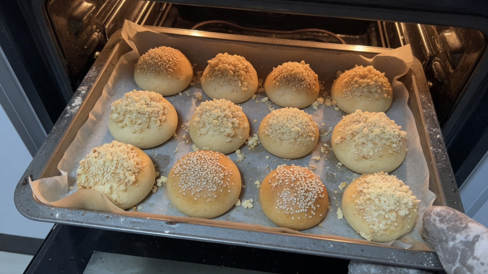

이 기록을 쓰는 사람
다루는 주제
이 기록이 다른 이유
저는 유명 레시피를 요약하는 큐레이터가 아니라, 집 주방에서 변수 하나를 바꿔 가며 밤식빵에 가까워지려는 사람입니다. 글의 근거는 검색 상위 글이 아니라 제 반죽 메모·실패 목록·다음 날 식감입니다.
독자가 가져갈 수 있는 것은 ‘제 그램표’가 아니라, 실패를 기록하고 다음 변수를 고르는 방법입니다. 입구는 실전 정리를 권합니다.
기록 방식
사이트 소개·타임라인은 소개 페이지에, 글 목록은 가이드와 칼럼에 있습니다.
이 페이지에서 하는 일
콘텐츠 갱신 방침
글을 쓸 때 지키는 것
문의
콘텐츠 오류 제보·제안: onhopetoj@gmail.com
최근 글

제빵기능사 실기 — 처음 망한 것과 반복한 연습
2024년 10월부터 약 6개월간 실기를 반복하며 망한 포인트를 정리했습니다. 반죽 종료 온도, 발효 판단, 성형 편차, 오븐·스팀, 시간 재기까지 — 품목명보다 '왜 그렇게 됐는지'를 메모한 방식으로 기록합니다.

제빵기능사 필기 — 암기보다 실수하기 쉬운 포인트
필기는 실기보다 짧게 느껴졌지만, 시험 직전에 틀리기 쉬운 유형이 있었습니다. 단순 암기 대신 오답 노트·비교 표·위생 숫자 확인 루틴을 정리했습니다.

밤식빵, 집에서 바로 쓸 실전 정리 (일지 대신 이 글부터)
밤식빵 R&D 일지가 길다면 이 글만 보세요. 토핑·수분·보관·시럽·재료·브러싱 일곱 가지 판단, 겨울 발효·개방 표, 신선 밤 크기 선별, 망하기 쉬운 점, 메모 양식을 한곳에 담았습니다. 완성 레시피·그램 표가 아닙니다. 평가 시각(따뜻할 때와 아침)과 유산지 유무도 한 줄로 붙였습니다.

단과자빵 계열 — 성형·굽기만 먼저 보는 접근 순서
제빵기능사 실기의 단과자빵·소보로 등 ‘손이 많이 가는’ 계열을 준비할 때, 저는 레시피보다 성형 속도·굽기 색·마무리 동선을 먼저 고정했습니다. 완성 그램 표 없이 접근 순서만 정리합니다.

1차 발효 — 레시피 분을 버리고 눌림을 본 날
기능사 실기에서 1차 발효를 레시피 40분으로만 끝냈더니, 같은 반죽이 겨울과 봄에 다르게 나왔습니다. 그다음부터 손가락 눌림과 표면을 분에 붙여 적었습니다. 완성 그램 표는 없습니다.

집에서 빵 만들 때 작업대·발효·굽기·식힘 공간 구성하는 방법
집 식탁·창가·냉장고 옆·전자레인지 옆·난방·오븐 단·식힘 망·타이머 줄을 하나씩 옮기며 발효와 굽기가 달라진 점을 한 장에 모았습니다. 완성 레시피가 아닙니다.